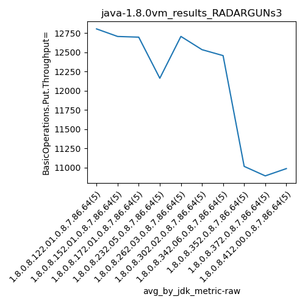

java-1.8.0 RADARGUNs3
Context at bottom
/home/jvanek/git/benchmarks-in-nested-virtualisation-toolchain/final_results/vm_results/vm_results_RADARGUNs1
java-1.8.0
RADARGUNs3
/home/jvanek/git/benchmarks-in-nested-virtualisation-toolchain/final_results/vm_results/vm_results_RADARGUNs3
java-1.8.0
RADARGUNs3
vm_results_RADARGUNs3
- vm_results_RADARGUNs3 - throughput get
- vm_results_RADARGUNs3 - throughput put
- vm_results_RADARGUNs3 - response mean time get
- vm_results_RADARGUNs3 - response mean time put
vm_results_RADARGUNs3 - throughput get
Expected number of java-1.8.0 JDKs: 10
1st avgmed_alljdks_metric:
/home/jvanek/git/benchmarks-in-nested-virtualisation-toolchain/final_results/result_processing.py /home/jvanek/git/benchmarks-in-nested-virtualisation-toolchain/final_results/vm_results/vm_results_RADARGUNs3 BasicOperations.Get.Throughput= False
values: [52318, 51582, 52264, 49464, 50468, 51708, 50990, 49495, 49399, 52607, 46064, 52443, 52408, 50217, 52884, 47278, 49997, 48351, 50074, 47571, 52234, 51659, 51226, 47143, 51930, 49615, 51516, 50473, 47704, 51400, 51169, 50326, 48591, 49881, 49255, 44357, 44296, 43882, 44074, 43644, 43623, 44690, 42557, 43384, 43641, 42488, 45180, 44671, 44086, 43317]

Expected number of iterations: 5
final number of values: 50 out of 50
Pass rate: 100.0%
values: (42488, 52884, 48391.88, 49495)

** accuracy from all jdks and runs
more is better
MIN: 42488
MAX: 52884
AVG: 48391.88
MED: 49495
Relative differences 1:
MIN-MAX: 20.0 %
MIN-AVG: 12.0 %
MIN-MED: 14.0 %
MAX-MIN: -24.0 %
MAX-AVG: -9.0 %
MAX-MED: -7.0 %
AVG-MED: 2.0 %
stored to java-1.8.0.properties. sort | uniq that!
2nd avgmed_by_jdk_metric:
values: [51219.2, 50839.8, 50803.2, 48654.2, 50838.4, 50141.6, 49844.4, 44050.6, 43579.0, 43948.4]

values: [51582, 50990, 52408, 48351, 51659, 50473, 49881, 44074, 43623, 44086]

values: (43579.0, 51219.2, 48391.88, 50141.6)
values: (43623, 52408, 48712.7, 50473)

** accuracy from all jdks where runs were avged
more is better
MIN: 43579.0
MAX: 51219.2
AVG: 48391.88
MED: 50141.6
Relative differences 1:
MIN-MAX: 15.0 %
MIN-AVG: 10.0 %
MIN-MED: 13.0 %
MAX-MIN: -18.0 %
MAX-AVG: -6.0 %
MAX-MED: -2.0 %
AVG-MED: 3.0 %
stored to java-1.8.0.properties. sort | uniq that!
** accuracy from all jdks where runs were medianed
more is better
MIN: 43623
MAX: 52408
AVG: 48712.7
MED: 50473
Relative differences 1:
MIN-MAX: 17.0 %
MIN-AVG: 10.0 %
MIN-MED: 14.0 %
MAX-MIN: -20.0 %
MAX-AVG: -8.0 %
MAX-MED: -4.0 %
AVG-MED: 3.0 %
stored to java-1.8.0.properties. sort | uniq that!
vm_results_RADARGUNs3 - throughput put
Expected number of java-1.8.0 JDKs: 10
1st avgmed_alljdks_metric:
/home/jvanek/git/benchmarks-in-nested-virtualisation-toolchain/final_results/result_processing.py /home/jvanek/git/benchmarks-in-nested-virtualisation-toolchain/final_results/vm_results/vm_results_RADARGUNs3 BasicOperations.Put.Throughput= False
values: [13076, 12896, 13072, 12368, 12614, 12922, 12748, 12369, 12354, 13141, 11506, 13114, 13100, 12561, 13208, 11820, 12501, 12089, 12518, 11886, 13053, 12915, 12803, 11787, 12979, 12405, 12882, 12614, 11924, 12850, 12786, 12570, 12145, 12469, 12318, 11096, 11076, 10971, 11020, 10914, 10901, 11172, 10638, 10843, 10905, 10622, 11297, 11168, 11016, 10830]

Expected number of iterations: 5
final number of values: 50 out of 50
Pass rate: 100.0%
values: (10622, 13208, 12096.64, 12369)

** accuracy from all jdks and runs
more is better
MIN: 10622
MAX: 13208
AVG: 12096.64
MED: 12369
Relative differences 1:
MIN-MAX: 20.0 %
MIN-AVG: 12.0 %
MIN-MED: 14.0 %
MAX-MIN: -24.0 %
MAX-AVG: -9.0 %
MAX-MED: -7.0 %
AVG-MED: 2.0 %
stored to java-1.8.0.properties. sort | uniq that!
2nd avgmed_by_jdk_metric:
values: [12805.2, 12706.8, 12697.8, 12162.8, 12707.4, 12535.0, 12457.6, 11015.4, 10891.8, 10986.6]

values: [12896, 12748, 13100, 12089, 12915, 12614, 12469, 11020, 10901, 11016]

values: (10891.8, 12805.2, 12096.64, 12535.0)
values: (10901, 13100, 12176.8, 12614)

** accuracy from all jdks where runs were avged
more is better
MIN: 10891.8
MAX: 12805.2
AVG: 12096.64
MED: 12535.0
Relative differences 1:
MIN-MAX: 15.0 %
MIN-AVG: 10.0 %
MIN-MED: 13.0 %
MAX-MIN: -18.0 %
MAX-AVG: -6.0 %
MAX-MED: -2.0 %
AVG-MED: 3.0 %
stored to java-1.8.0.properties. sort | uniq that!
** accuracy from all jdks where runs were medianed
more is better
MIN: 10901
MAX: 13100
AVG: 12176.8
MED: 12614
Relative differences 1:
MIN-MAX: 17.0 %
MIN-AVG: 10.0 %
MIN-MED: 14.0 %
MAX-MIN: -20.0 %
MAX-AVG: -8.0 %
MAX-MED: -4.0 %
AVG-MED: 3.0 %
stored to java-1.8.0.properties. sort | uniq that!
vm_results_RADARGUNs3 - response mean time get
Expected number of java-1.8.0 JDKs: 10
1st avgmed_alljdks_metric:
/home/jvanek/git/benchmarks-in-nested-virtualisation-toolchain/final_results/result_processing.py /home/jvanek/git/benchmarks-in-nested-virtualisation-toolchain/final_results/vm_results/vm_results_RADARGUNs3 BasicOperations.Get.ResponseTimeMean True
values: [116891, 117558, 116566, 122929, 120002, 117619, 119490, 121969, 122631, 115816, 132031, 115789, 116443, 120122, 115600, 128512, 121483, 125297, 121303, 127696, 116500, 117284, 119409, 128165, 117467, 122828, 118821, 119792, 127064, 118407, 119257, 121031, 125199, 122221, 123076, 134489, 132822, 135135, 134501, 135585, 136156, 132969, 139271, 137247, 135221, 139677, 131406, 132951, 135759, 137249]

Expected number of iterations: 5
final number of values: 50 out of 50
Pass rate: 100.0%
values: (115600, 139677, 125254.12, 122828)

** accuracy from all jdks and runs
more is worse
MIN: 139677
MAX: 115600
AVG: 125254.12
MED: 122828
Relative differences 1:
MIN-MAX: 21.0 %
MIN-AVG: 12.0 %
MIN-MED: 14.0 %
MAX-MIN: -17.0 %
MAX-AVG: -8.0 %
MAX-MED: -6.0 %
AVG-MED: 2.0 %
stored to java-1.8.0.properties. sort | uniq that!
2nd avgmed_by_jdk_metric:
values: [118789.2, 119505.0, 119997.0, 124858.2, 119765.0, 121382.4, 122156.8, 134506.4, 136172.8, 135408.4]

values: [117558, 119490, 116443, 125297, 117467, 119792, 122221, 134501, 136156, 135759]
values: (118789.2, 136172.8, 125254.12, 122156.8)
values: (116443, 136156, 124468.4, 122221)

** accuracy from all jdks where runs were avged
more is worse
MIN: 136172.8
MAX: 118789.2
AVG: 125254.12
MED: 122156.8
Relative differences 1:
MIN-MAX: 15.0 %
MIN-AVG: 9.0 %
MIN-MED: 11.0 %
MAX-MIN: -13.0 %
MAX-AVG: -5.0 %
MAX-MED: -3.0 %
AVG-MED: 3.0 %
stored to java-1.8.0.properties. sort | uniq that!
** accuracy from all jdks where runs were medianed
more is worse
MIN: 136156
MAX: 116443
AVG: 124468.4
MED: 122221
Relative differences 1:
MIN-MAX: 17.0 %
MIN-AVG: 9.0 %
MIN-MED: 11.0 %
MAX-MIN: -14.0 %
MAX-AVG: -6.0 %
MAX-MED: -5.0 %
AVG-MED: 2.0 %
stored to java-1.8.0.properties. sort | uniq that!
vm_results_RADARGUNs3 - response mean time put
Expected number of java-1.8.0 JDKs: 10
1st avgmed_alljdks_metric:
/home/jvanek/git/benchmarks-in-nested-virtualisation-toolchain/final_results/result_processing.py /home/jvanek/git/benchmarks-in-nested-virtualisation-toolchain/final_results/vm_results/vm_results_RADARGUNs3 BasicOperations.Put.ResponseTimeMean True
values: [444881, 454816, 446692, 472975, 465380, 452254, 457797, 476500, 475340, 444409, 509316, 446167, 444607, 469536, 440380, 495012, 468374, 485660, 467688, 492680, 447962, 454589, 454146, 499659, 449385, 470831, 451237, 466469, 492686, 454555, 455832, 464725, 481643, 467849, 476833, 534828, 542182, 544328, 542037, 548103, 546972, 533550, 561655, 548893, 549924, 561771, 527945, 533870, 537585, 550345]

Expected number of iterations: 5
final number of values: 50 out of 50
Pass rate: 100.0%
values: (440380, 561771, 489257.06, 475340)

** accuracy from all jdks and runs
more is worse
MIN: 561771
MAX: 440380
AVG: 489257.06
MED: 475340
Relative differences 1:
MIN-MAX: 28.0 %
MIN-AVG: 15.0 %
MIN-MED: 18.0 %
MAX-MIN: -22.0 %
MAX-AVG: -10.0 %
MAX-MED: -7.0 %
AVG-MED: 3.0 %
stored to java-1.8.0.properties. sort | uniq that!
2nd avgmed_by_jdk_metric:
values: [456948.8, 461260.0, 462001.2, 481882.8, 461148.2, 467155.6, 469376.4, 542295.6, 548198.8, 542303.2]

values: [454816, 457797, 446167, 485660, 454146, 466469, 467849, 542182, 548893, 537585]

values: (456948.8, 548198.8, 489257.05999999994, 469376.4)
values: (446167, 548893, 486156.4, 467849)
** accuracy from all jdks where runs were avged
more is worse
MIN: 548198.8
MAX: 456948.8
AVG: 489257.05999999994
MED: 469376.4
Relative differences 1:
MIN-MAX: 20.0 %
MIN-AVG: 12.0 %
MIN-MED: 17.0 %
MAX-MIN: -17.0 %
MAX-AVG: -7.0 %
MAX-MED: -3.0 %
AVG-MED: 4.0 %
stored to java-1.8.0.properties. sort | uniq that!
** accuracy from all jdks where runs were medianed
more is worse
MIN: 548893
MAX: 446167
AVG: 486156.4
MED: 467849
Relative differences 1:
MIN-MAX: 23.0 %
MIN-AVG: 13.0 %
MIN-MED: 17.0 %
MAX-MIN: -19.0 %
MAX-AVG: -8.0 %
MAX-MED: -5.0 %
AVG-MED: 4.0 %
stored to java-1.8.0.properties. sort | uniq that!
/home/jvanek/git/benchmarks-in-nested-virtualisation-toolchain/final_results/vm_results/vm_results_DACAPO
java-1.8.0
RADARGUNs3
/home/jvanek/git/benchmarks-in-nested-virtualisation-toolchain/final_results/vm_results/vm_results_J2DBENCH
java-1.8.0
RADARGUNs3
/home/jvanek/git/benchmarks-in-nested-virtualisation-toolchain/final_results/vm_results/vm_results_SPECJBB
java-1.8.0
RADARGUNs3
/home/jvanek/git/benchmarks-in-nested-virtualisation-toolchain/final_results/vm_results/vm_results_JMH
java-1.8.0
RADARGUNs3
pass rates:
vm_results_RADARGUNs3=100.0%
Context:
- vm_results
- RADARGUNs3